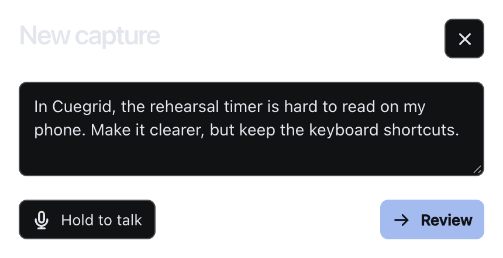
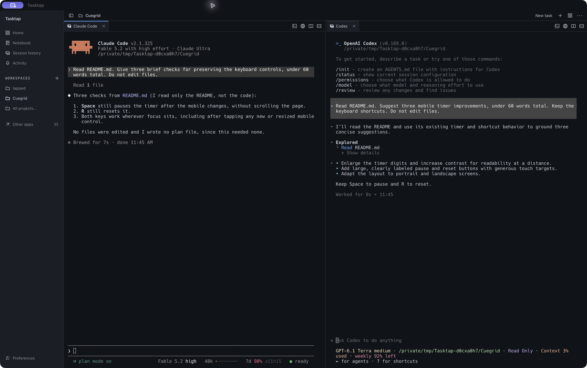
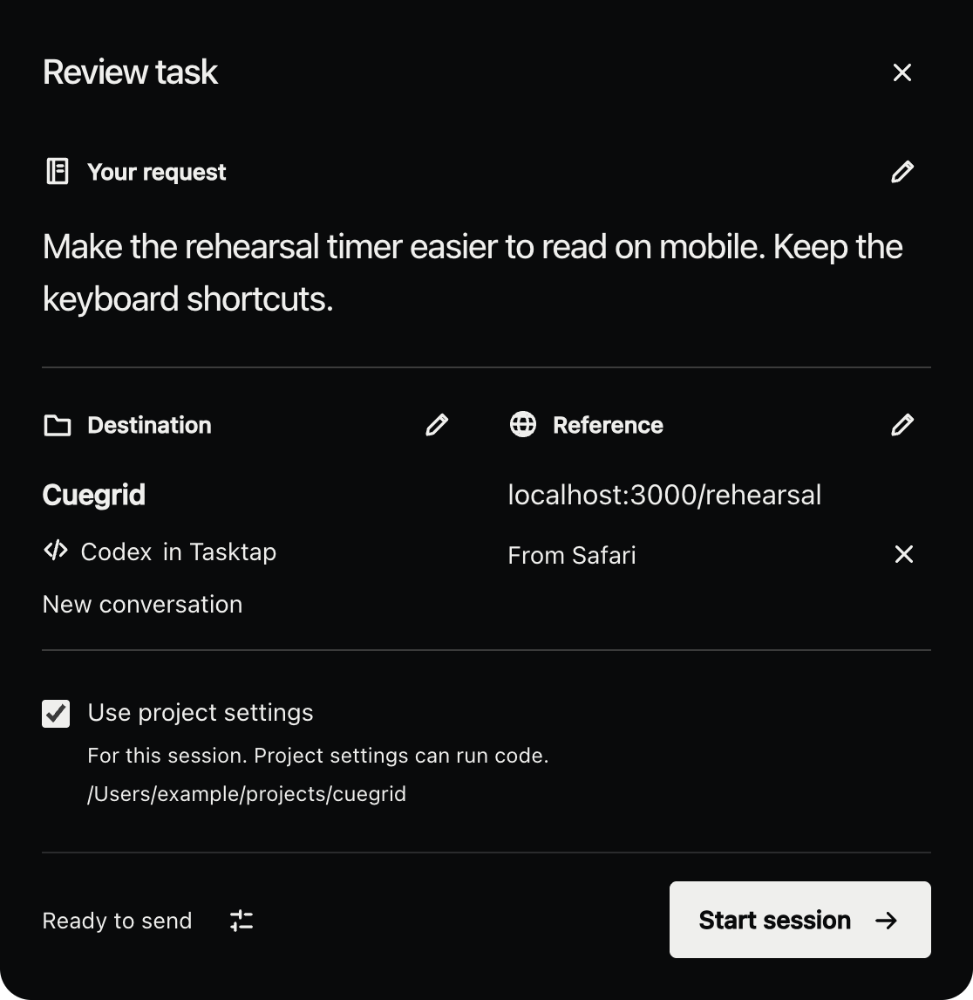
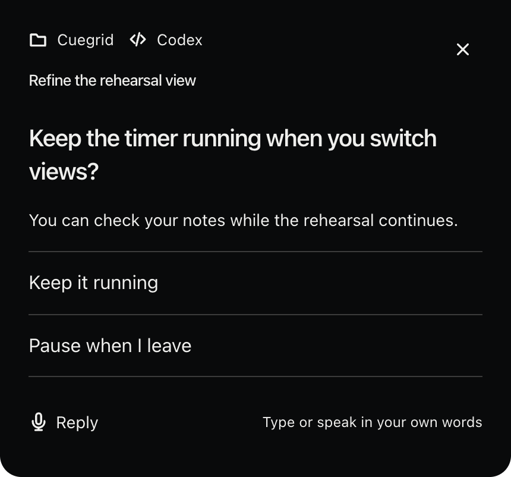
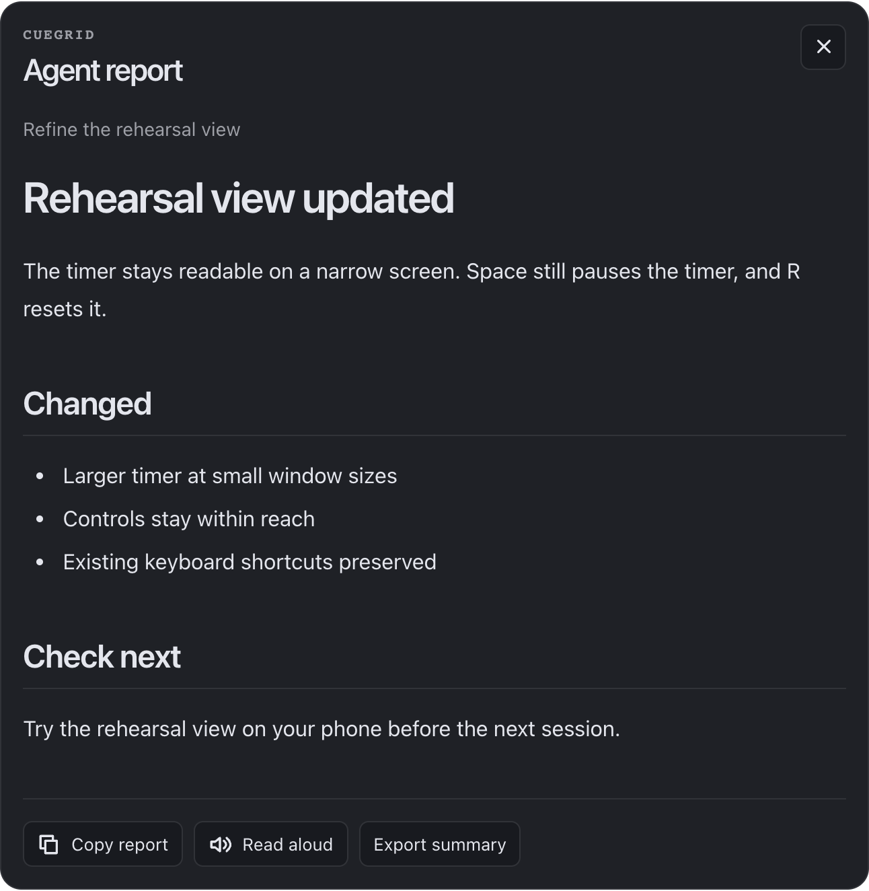

01 / CAPTURESay it as
Say it as
it comes.
Speak from the notch and see your words transcribed as you talk. Type or add a sketch, too, without leaving the app you’re using.
⌃ ⌥ SpaceTap to type. Hold to speak.

Turn a thought into a prompt for the right project or conversation. Run and manage your agent sessions in Tasktap’s built-in terminal workspace.
Apple siliconmacOS 26+
Route a new task or a follow-up to the right session, then manage it here. The embedded terminal multiplexer keeps agents and shells in tabs and split panes, with previews, files and notes alongside.

Captured in the Mac appExample project
View full resolutionYour installed agents. Your existing logins.
From a spoken thought to the right session.
See how the handoff works.
Speak from the notch and see your words transcribed as you talk. Type or add a sketch, too, without leaving the app you’re using.

Tasktap can suggest a clearer brief from your request and match the project you name. Review the wording before it becomes your agent’s prompt.
How preparation works“In Cuegrid, the rehearsal timer is hard to read on my phone. Make it clearer, but keep the keyboard shortcuts.”
Make the rehearsal timer easier to read on mobile. Keep the keyboard shortcuts.
Start a new session or send a follow-up to an existing conversation. Confirm the prompt, project and agent, with the page’s URL or selected file attached.
Review the handoff
When Codex or Claude Code asks a supported question, reply from the notch. Type or speak naturally. Your words return to the same agent, which interprets what you mean.
Questions and results
Reported results stay tied to the original request and session. Read the full report, copy it or have it read aloud, then send your next thought to the same conversation.
Results and history
Terminal processes stay alive when you close a tab. Reopen a workspace with its saved layout and pick up where you left off.
Session continuityOpen Markdown, HTML, images, PDFs, audio, video or a live preview. Ask agent includes that file or URL in your next reviewed task.
Files and previewsKeep a note or sketch without starting an agent. Leave it in Scratch, or file it with the project it belongs to.
Capture and notesTerminal is the recommended way to install.
It checks the download, finds the right folder, and backs up an existing copy.
Copy, paste into Terminal, press Return.
curl -fL --proto '=https' --tlsv1.2 https://harzerheribert.github.io/Tasktap/install.sh -o tasktap-install.sh && bash tasktap-install.shApple silicon, macOS 26+
Agent work needs Python 3 and a signed-in agent CLI.
Community release. Locally signed, not Apple notarized.
First launch may need Privacy & Security → Open Anyway.